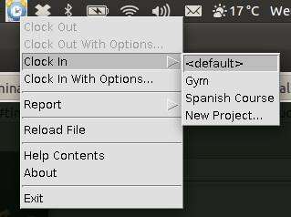

| [ < ] | [ > ] | [ << ] | [ Up ] | [ >> ] | [Top] | [Contents] | [Index] | [ ? ] |
Clock-in by right-clicking the tray icon and selecting Clock In. Several
options will be available. If the timeclock file contains other projects,
these are listed under the Clock In menu. The ‘default’ (i.e. project
with no name) project is given as <default>.
The following image illustrates this, along with several other projects available for clocking-in:
Clocking-in to the selected project will cause a new line to be added to the
timeclock file.
To create a new project, select Clock In, then select New Project.
A dialog will be presented:

Enter the project name then select OK.
Once clocked in, the menu will change; the Clock Out menu will
become enabled and the Clock In menu will become disabled.
Several options can also be set when clocking-in. Selecting
Clock In With Options... will present the following dialog:

Several options are available, each with a checkbox. If the checkbox is not selected when the user selects OK, that field is not used as part of the clock-in. The options are as follows:
Losing focus of any date or time field (by selecting another UI field) will cause the newly entered date/time to be parsed, either in the format yyyy-mm-dd (for dates) and hh:mm (for times). Failure to enter a correct date or time will result in an error dialog being displayed, and the field will become disabled and the checkbox for the date or time will become unselected.
| [ < ] | [ > ] | [ << ] | [ Up ] | [ >> ] |
This document was generated by rich on April 1, 2013 using texi2html 1.82.